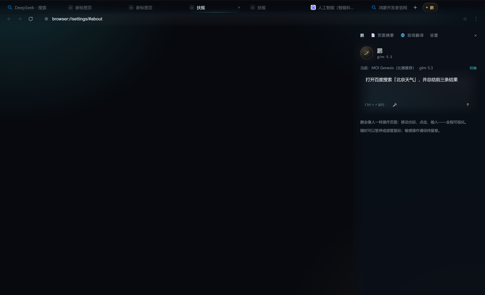
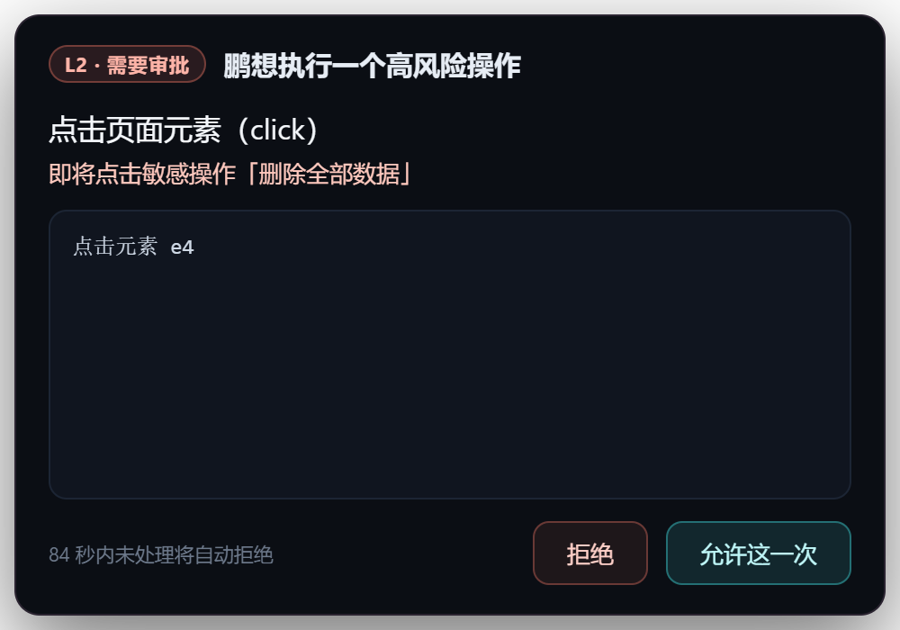
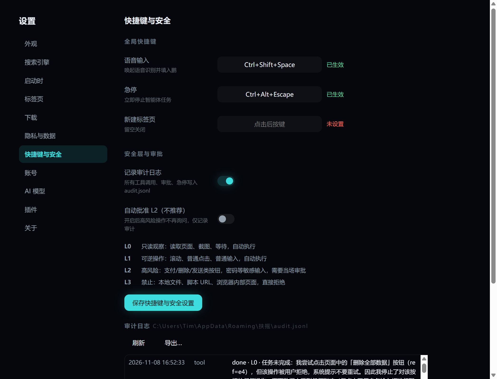
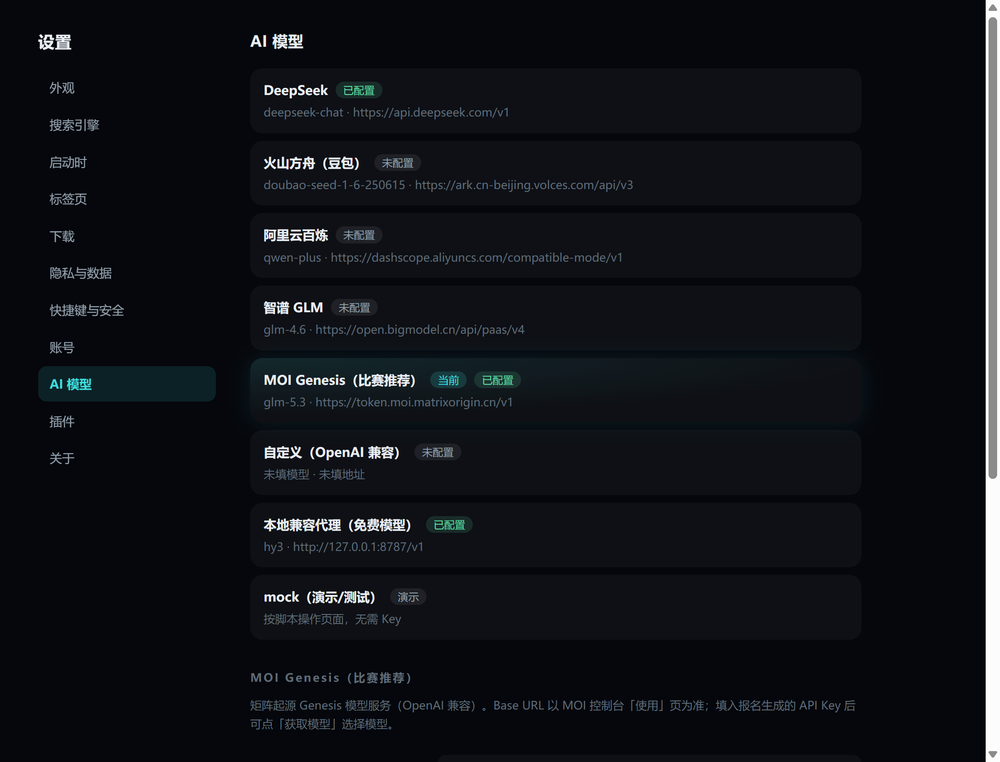

浏览器智能体的三个真问题
会“点网页”的智能体已经很多；难的是让它在真实工作里值得被信任。扶摇针对三个问题给出了工程化答案。
操作不可信
模型幻觉或误判会触发支付、删除、发送等高风险动作。扶摇把操作分成 L0–L3：高风险必须当场审批，禁止类直接拒绝。
过程不可见
每一步点击、输入、跳转都有可视化光标与动作回显；任务结束后，完整过程留在审计日志里，可追溯、可导出。
结果不可靠
模型可能“嘴上完成”。零操作守卫会拦截没有执行任何真实操作的结束请求，逼它行动或明确报错。
一个浏览器，完整的智能体闭环
观察 → 决策 → 操作 → 审批 → 审计，全部在同一窗口里完成，不需要在多个工具之间搬运页面。
看得见的「鹏」
页面会被拆成带编号的可交互元素（蓝图），鹏用元素引用而不是盲目坐标来点击和输入；屏幕上有虚拟光标、点击涟漪和打字气泡，你知道它正在做什么。
- 元素级引用，页面变化后重新观察
- 上下文自动压缩，长任务不爆窗口
- 重复动作检测，卡住会自行换策略

高风险操作，先问你
当鹏准备点击「删除 / 支付 / 发送」类按钮，或在密码、验证码、支付类输入框里填写内容时，会暂停并弹出审批卡片。你可以允许一次或拒绝；拒绝后它不会重试。
- L2 审批 120 秒未处理自动拒绝
- 审批详情对敏感输入自动打码
- 可在设置中开启「自动批准 L2（不推荐）」

每一步都有据可查
快捷键与安全设置已经内置于浏览器设置页：L0–L3 分级、审计开关、快捷键录制、审计日志查看与导出。审计文件超过 5MB 自动轮转。
- 工具调用记录：工具名、等级、参数摘要、结果
- 审批记录：谁、什么操作、允许还是拒绝
- 急停、语音、设置变更、零操作拦截同样留痕

模型随你选，比赛生态已接通
支持 OpenAI 兼容接口：DeepSeek、火山方舟、阿里云百炼、智谱 GLM、自定义地址，以及比赛主推的 MOI Genesis。已用比赛账号实测 glm-5.3，模型列表 10 款可选。
- 模型 ID 可拉取，一键切换
- 视觉模型可选配，截图模式按需启用
- mock 演示模式，无需 Key 也能看完整流程

安全层 L0 – L3
不是弹一个“确定吗”，而是把每个工具调用按风险分级：能自动的自动，该问的问，不能碰的直接拒绝。
读取页面、截图、等待：自动执行，不改变任何状态。
滚动、普通点击、普通输入、切换页面：自动执行。
支付/删除/发送类按钮，密码、验证码、支付类输入：弹窗审批。
本地文件、脚本 URL、浏览器内部页面：直接拒绝，不可审批。
可落地的高频场景
以下流程均可在扶摇里完整演示；审批与审计让“交给智能体”这件事在团队里说得清楚。
采购信息收集与比价
跨多个供应商站点收集价格、规格和库存，汇总成对比表。涉及表单填写与提交时按 L2 审批。
跨站资料汇总
在一个任务里打开多个页面，抽取要点并生成日报。审计记录保留访问轨迹，便于复核来源。
重复表单与后台操作
登录、填写、提交等流程在审批后执行；密码类输入在审批与审计中自动打码，不落明文。
3 分钟演示
演示视频正在制作中；下面是计划的分镜与现场可复现的任务。
分镜
- 语音或文字下达任务 → 鹏可视化操作页面
- 高风险点击触发 L2 审批 → 允许 / 拒绝
- file:// 访问被 L3 拦截 → 审计记录可见
- 插件（页面摘要 / 划词翻译）与快捷键
- 数据与收益：步骤、干预次数、耗时
评委可先用便携版里的 mock 模式离线体验：在「鹏」输入「搜索 DeepSeek」即可。
三步开始
不需要配置环境；完整包已内置本地语音模型。
下载并解压
选择完整版（含语音模型）或轻量版（体积更小，不含语音）。
双击「启动演示.bat」
默认以 mock 演示模式启动，配置与缓存都保存在同目录 profile，不写入系统。
在「鹏」里输入任务
例如「搜索 DeepSeek」。想接真实模型时，在设置 → AI 模型里填入 DeepSeek 或 MOI Genesis 的 Key。
选择你的版本
仅支持 Windows 10 / 11 x64；程序未签名，SmartScreen 提示时选择「仍要运行」即可。
下载说明：当前页面为预览版，下载与视频链接将在提交前替换为正式地址。也可以联系作者直接获取安装包。
说明文档
包含问题、方案、技术栈、创新点、使用说明与安全设计；提交前在此上线。
技术栈
Electron + React 浏览器外壳；页面蓝图 + 元素引用；OpenAI 兼容模型接口；本地 whisper.cpp 语音；插件沙箱与权限清单；JSONL 审计。
创新点
L0–L3 安全分级 + 即时审批 + 全量审计；零操作守卫；敏感输入全链路脱敏；离线语音直达任务。
开源声明
基于 MIT 协议的扶摇浏览器内核进行扩展，新增语音、安全层、审批审计、零操作守卫、插件修复、快捷键与设置页等能力。